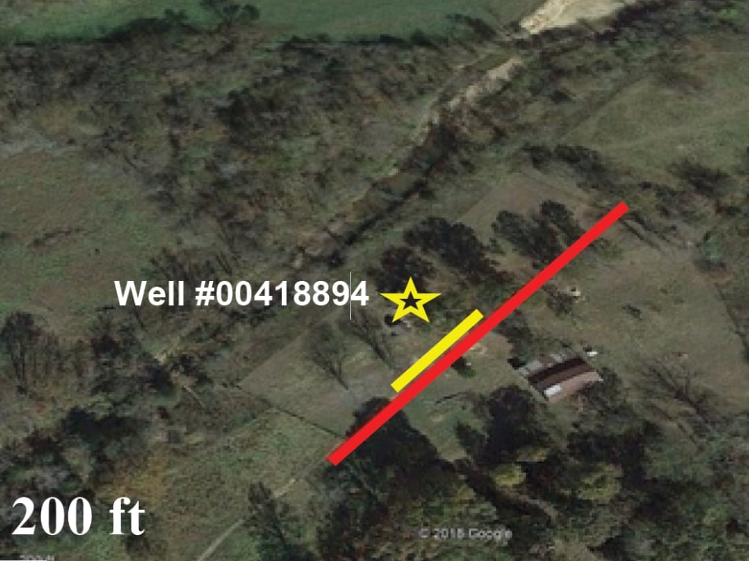

Geophysicist with 5+ years of experience
I am Ragab, a geophysicist specializing in the acquisition and interpretation of both near-surface and deep-subsurface data. My expertise extends to data analysis and GIS data analytics. I am currently pursuing the GIS Applications Specialist program at Fleming College.
Correlation of the interpretation of (ERT) profile 1 with dipole-dipole arrays configuration and shear wave velocity profile of MASW.
A map of the study area from Google shows the location of ERT traverse, MASW traverse, and a borehole.